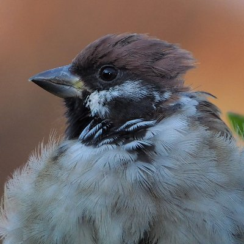

kernarme
@oct424242
RT @chunchu0803: 昨日の砂浴びの動画バージョンです。
雑音や話し声が入ってるので無音にしてます。
砂浴び、絶対楽しいよね❣️
猛スピードで何度も画面を横切る２羽のバトルにも注目です🧐
#すずめ #sparrow
#ちゅん活 …

ちゅんちゅん
@chunchu0803
昨日の砂浴びの動画バージョンです。
雑音や話し声が入ってるので無音にしてます。
砂浴び、絶対楽しいよね❣️
猛スピードで何度も画面を横切る２羽のバトルにも注目です🧐
#すずめ #sparrow
#ちゅん活 https://t.co/kK5WQiZ0r2